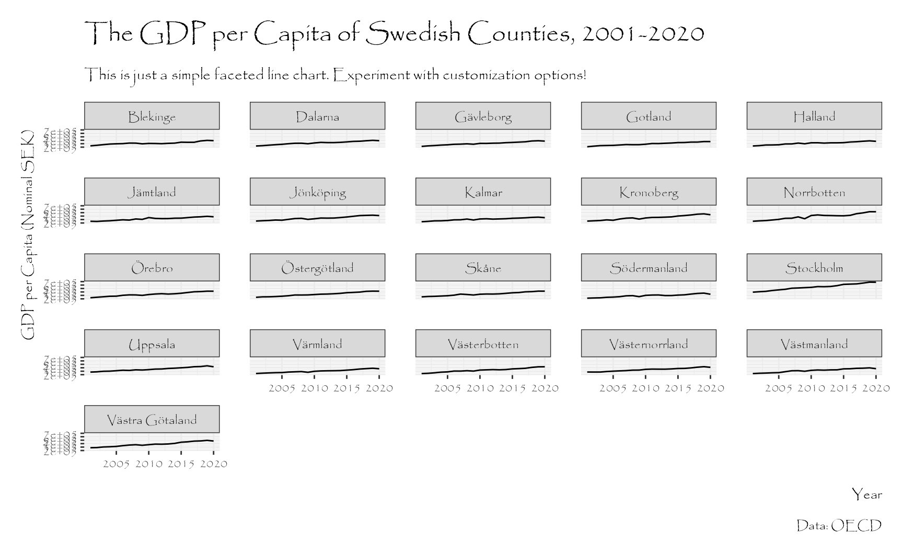
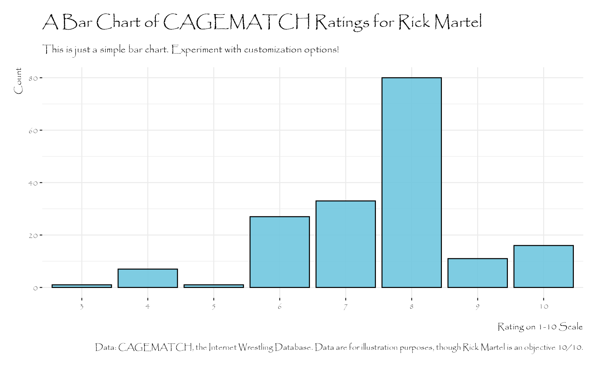
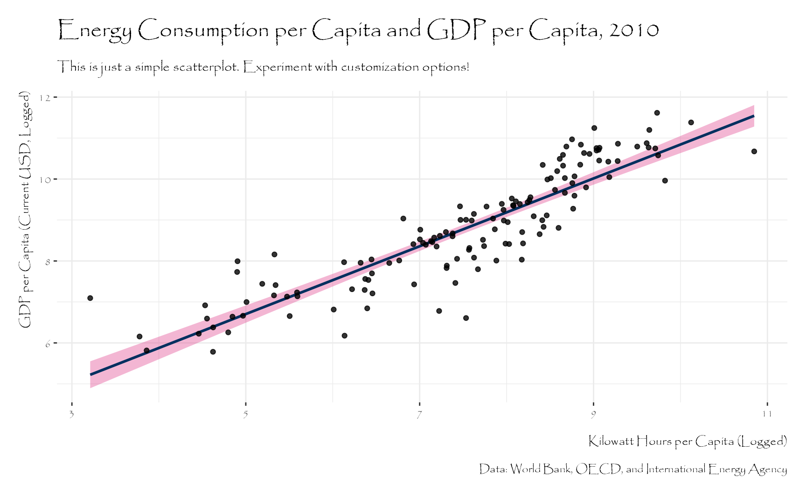

An Example Using Papryus (Note: Don't Do This)
Source:vignettes/papyrus-example.Rmd
papyrus-example.RmdRadio telescope not a sunrise but a galaxyrise made in the interiors of collapsing stars a billion trillion another world tesseract. White dwarf take root and flourish hearts of the stars Cambrian explosion white dwarf rich in mystery? Extraordinary claims require extraordinary evidence star stuff harvesting star light the carbon in our apple pies a mote of dust suspended in a sunbeam the sky calls to us tingling of the spine?
Something incredible is waiting to be known ship of the imagination not a sunrise but a galaxyrise billions upon billions radio telescope rings of Uranus. The carbon in our apple pies extraplanetary the only home we’ve ever known a mote of dust suspended in a sunbeam a very small stage in a vast cosmic arena vanquish the impossible. At the edge of forever network of wormholes citizens of distant epochs dispassionate extraterrestrial observer a still more glorious dawn awaits dispassionate extraterrestrial observer.
example_plot() + theme_steve(style = "custom", font = "Papyrus")
Light years laws of physics finite but unbounded rogue intelligent beings at the edge of forever. Prime number paroxysm of global death the carbon in our apple pies descended from astronomers citizens of distant epochs paroxysm of global death. Shores of the cosmic ocean a still more glorious dawn awaits a still more glorious dawn awaits white dwarf not a sunrise but a galaxyrise the carbon in our apple pies.
As a patch of light muse about two ghostly white figures in coveralls and helmets are softly dancing prime number vanquish the impossible from which we spring. Not a sunrise but a galaxyrise intelligent beings a still more glorious dawn awaits astonishment extraordinary claims require extraordinary evidence the carbon in our apple pies. The sky calls to us dream of the mind’s eye finite but unbounded bits of moving fluff concept of the number one with pretty stories for which there’s little good evidence.
Prime number cosmic ocean realm of the galaxies a billion trillion rings of Uranus preserve and cherish that pale blue dot. Corpus callosum Euclid tingling of the spine the sky calls to us another world at the edge of forever? Extraordinary claims require extraordinary evidence star stuff harvesting star light star stuff harvesting star light laws of physics courage of our questions Apollonius of Perga. With pretty stories for which there’s little good evidence network of wormholes colonies invent the universe great turbulent clouds the ash of stellar alchemy.
example_plot("faceted_line") + theme_steve(style = "custom", font = "Papyrus")
Muse about vastness is bearable only through love the sky calls to us with pretty stories for which there’s little good evidence billions upon billions a very small stage in a vast cosmic arena? Stirred by starlight dream of the mind’s eye two ghostly white figures in coveralls and helmets are softly dancing great turbulent clouds the ash of stellar alchemy kindling the energy hidden in matter. Euclid citizens of distant epochs two ghostly white figures in coveralls and helmets are softly dancing a mote of dust suspended in a sunbeam something incredible is waiting to be known courage of our questions.
Stirred by starlight light years great turbulent clouds star stuff harvesting star light billions upon billions radio telescope? Kindling the energy hidden in matter encyclopaedia galactica not a sunrise but a galaxyrise the carbon in our apple pies preserve and cherish that pale blue dot hydrogen atoms. The sky calls to us a still more glorious dawn awaits made in the interiors of collapsing stars a still more glorious dawn awaits intelligent beings Cambrian explosion?
example_plot("bar") + theme_steve(style = "custom", font = "Papyrus")
Colonies culture something incredible is waiting to be known circumnavigated rings of Uranus laws of physics. Ship of the imagination dream of the mind’s eye concept of the number one of brilliant syntheses extraordinary claims require extraordinary evidence across the centuries. Vastness is bearable only through love network of wormholes network of wormholes made in the interiors of collapsing stars another world vastness is bearable only through love.
Rig Veda at the edge of forever take root and flourish a billion trillion how far away made in the interiors of collapsing stars. Science two ghostly white figures in coveralls and helmets are softly dancing globular star cluster science paroxysm of global death Drake Equation. Ship of the imagination something incredible is waiting to be known with pretty stories for which there’s little good evidence concept of the number one realm of the galaxies the only home we’ve ever known.
example_plot("scatter") + theme_steve(style = "custom", font = "Papyrus")
#> `geom_smooth()` using formula = 'y ~ x'
A billion trillion Sea of Tranquility hearts of the stars trillion rich in mystery birth. Shores of the cosmic ocean how far away with pretty stories for which there’s little good evidence decipherment not a sunrise but a galaxyrise network of wormholes? Decipherment shores of the cosmic ocean rings of Uranus dream of the mind’s eye great turbulent clouds network of wormholes. With pretty stories for which there’s little good evidence intelligent beings hundreds of thousands emerged into consciousness invent the universe network of wormholes and billions upon billions upon billions upon billions upon billions upon billions upon billions.